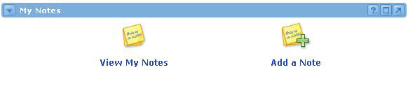
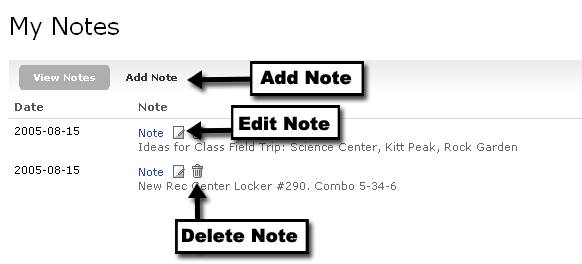

My Notes Channel
Looking for more help options? Click Here
The My Notes Channel allows a user to maintain a personal set of notes. From the default view, you can choose to view your existing notes or add new ones. To view a list of your existing notes, click the View My Notes link. To add new notes, click the Add a Note link.

You can also add a new note by clicking the Add Note option within the detailed notes view. When adding a note you will then be prompted for the text of the note. Click Submit to save the note and return to the list of your existing notes. In addition to the note text, the date of the note will be displayed. You can edit or delete a note by clicking the applicable icon next to the note link.
